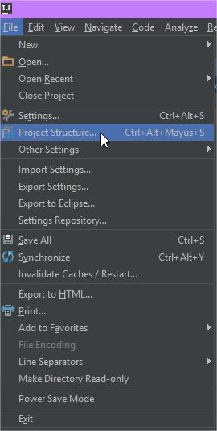
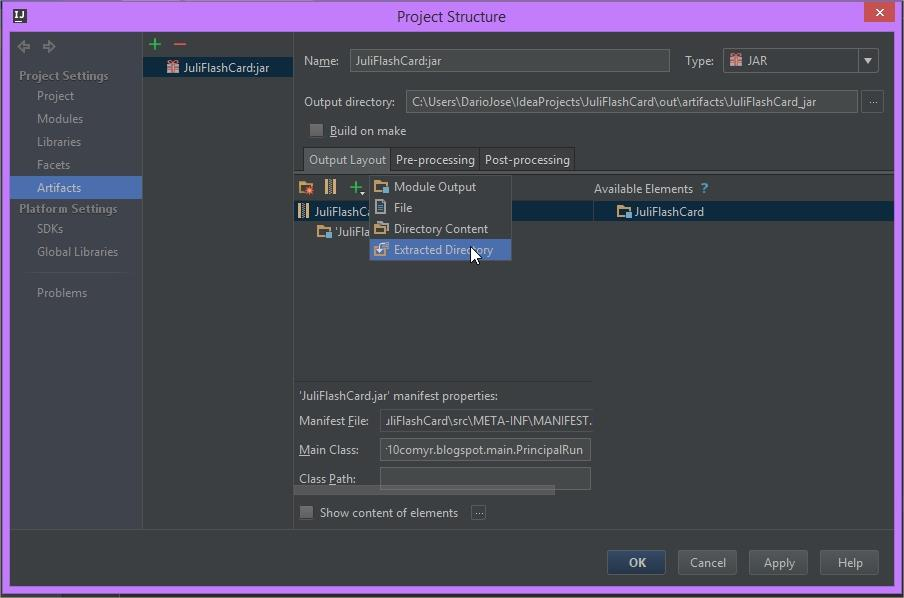
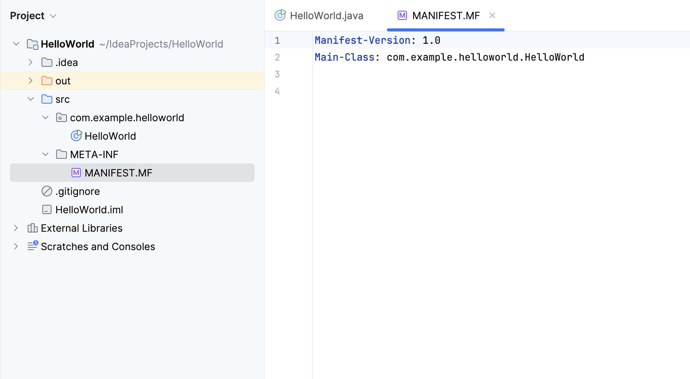
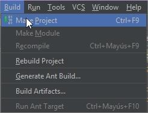
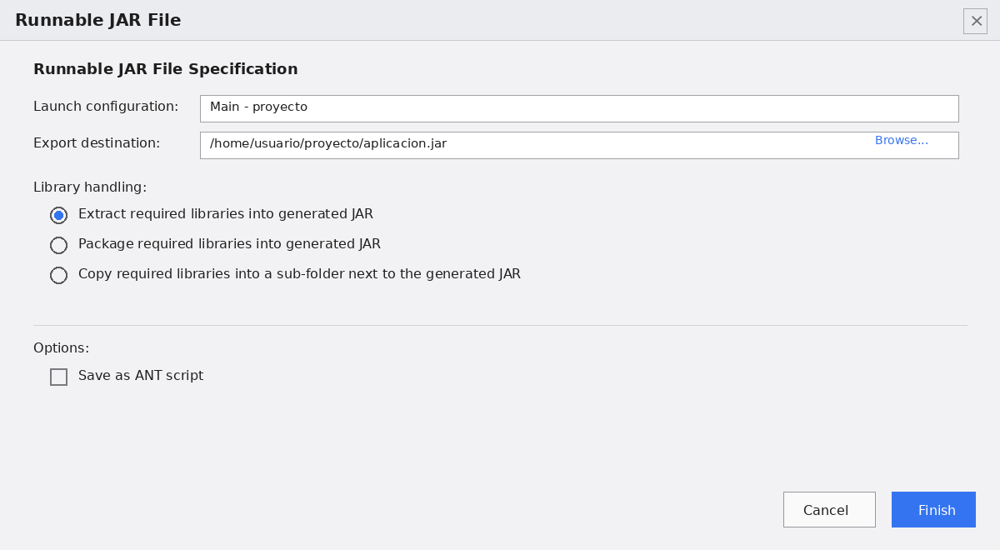

Generación de ejecutables: lenguajes y entornos
Un artefacto ejecutable es el resultado final de empaquetar el código compilado junto con todo lo que necesita para arrancar por sí solo: las dependencias (las librerías externas que utiliza) y un manifiesto de arranque que le indica a la máquina virtual cuál es el punto de entrada del programa.
Para entender por qué hace falta ese empaquetado, conviene comparar dos situaciones que a menudo se confunden. Cuando ejecutamos un programa dentro del IDE, todo parece mágico: pulsamos Run y funciona. Lo que no se ve es que el IDE está haciendo un montón de trabajo por debajo: sabe dónde están las clases compiladas, conoce la ruta de todas las librerías del proyecto, tiene configurado el classpath (la lista de lugares donde buscar las clases) y ha preparado el entorno para que el programa encuentre todo lo que necesita. El IDE es, en ese momento, un andamiaje que sostiene la ejecución.
El problema aparece cuando queremos entregar ese programa a otra persona o ejecutarlo en otro equipo. Ese otro equipo no tiene el IDE, no conoce las rutas del proyecto ni el classpath, y desde luego no sabe dónde están las librerías. Si le pasamos solo los archivos compilados sueltos, la aplicación no arrancará. Necesitamos un paquete autónomo que lleve dentro todo lo necesario y que incluya la información de por dónde empezar. Eso es un artefacto ejecutable, y entender cómo se genera es lo que separa un proyecto que solo funciona en nuestro ordenador de una aplicación que se puede distribuir.
Generación de ejecutables en distintos lenguajes con un mismo IDE
Buena parte de ese trabajo se puede hacer sin salir de IntelliJ IDEA, porque el IDE tiene un soporte multilenguaje que va más allá de Java. La plataforma JVM ejecuta indistintamente bytecode de Java y de Kotlin, y ambos lenguajes pueden convivir en un mismo proyecto e incluso llamarse entre sí. Esa interoperabilidad nativa permite compilar y empaquetar aplicaciones escritas en uno u otro lenguaje con el mismo flujo de trabajo, algo que resulta muy práctico y que demuestra la flexibilidad del entorno.
La anatomía interna de un archivo JAR
Para empezar, conviene entender cómo es un archivo JAR ejecutable por dentro, porque casi todos los malentendidos sobre "por qué no arranca mi programa" vienen de no conocer esta estructura. Un JAR no es más que un archivo ZIP con una estructura concreta: por dentro tiene carpetas y archivos comprimidos, igual que cualquier comprimido normal. Si se cambia la extensión a .zip y se descomprime, se ve el contenido tal cual.
Lo que convierte a un ZIP cualquiera en un JAR ejecutable es su archivo MANIFEST.MF, un pequeño fichero de texto situado en la carpeta META-INF. Ese manifiesto es, por así decirlo, la etiqueta del paquete: en él se declaran metadatos del artefacto, como la versión o el autor. Y, dentro de él, hay una directiva especialmente importante: Main-Class, que indica cuál es la clase que contiene el método main() que la máquina virtual debe lanzar al arrancar.
Esa línea es la que resuelve el problema de "por dónde empiezo". Un JAR puede contener cientos de clases, pero sin la directiva Main-Class la máquina virtual no sabe cuál de ellas es el punto de entrada, y se limita a avisar de que no encuentra la clase principal. Con esa directiva, en cambio, basta con pedirle que lo ejecute y el programa arranca por donde debe.
En IntelliJ, el empaquetado se define como un artefacto desde File → Project Structure, dentro de la sección Artifacts del panel de Project Settings.

Con esa sección abierta, se pulsa el botón + y se elige la plantilla JAR → From modules with dependencies, que recoge automáticamente las clases del proyecto y las librerías de las que depende.

En el diálogo siguiente se selecciona la Main-Class, la clase que contiene el método main(), que IntelliJ traducirá a la clave correspondiente del MANIFEST.MF.

Con el artefacto ya definido, la construcción se lanza desde Build → Build Artifacts. El IDE compila el código y deja el paquete en la carpeta de salida del proyecto, normalmente bajo out/artifacts.

A partir de ahí, la comprobación es inmediata desde la terminal:
Ese comando arranca la aplicación usando la Main-Class declarada en el manifiesto, lo que confirma que el empaquetado está bien hecho y que el programa funciona fuera del IDE.
Generación de ejecutables a partir de un mismo código en varios IDEs
Lo anterior demuestra que el IDE es una herramienta cómoda para empaquetar, pero conviene recordar una idea que está en el corazón de todo el ecosistema Java: el código fuente es portable y las configuraciones no. Un mismo programa Java puede compilarse y empaquetarse desde IntelliJ o desde Eclipse, y el JAR resultante debería comportarse igual, porque lo que viaja en el artefacto es bytecode, no la configuración de un IDE concreto.
Esta es la esencia de la portabilidad de la JVM que ya estudiamos en el primer tema. El bytecode es un formato estándar: no depende de si se compiló en IntelliJ, en Eclipse, en NetBeans o directamente con javac desde la terminal. Cualquier máquina virtual de Java que cumpla las especificaciones lo interpreta de la misma manera. Por eso, un JAR generado con las especificaciones estándar se ejecuta exactamente igual venga de donde venga, y esa independencia es la que permite trabajar en entornos distintos sin atarse a uno solo.
Exportación del proyecto en IntelliJ IDEA
En IntelliJ, el flujo ya lo tenemos recorrido: se define el artefacto desde Project Structure → Artifacts y se construye con Build → Build Artifacts. El archivo .jar compilado aparece en la carpeta out/artifacts del proyecto, y desde ahí se puede copiar, distribuir o ejecutar por consola como cualquier otro ejecutable.
Exportación del mismo código en Eclipse
Llevar ese mismo código a Eclipse es sencillo, porque el lenguaje no cambia: basta con importar o crear el proyecto en el IDE a partir del mismo código fuente. La diferencia está en el procedimiento de empaquetado, que en Eclipse no pasa por artefactos, sino por un asistente de exportación.
En Eclipse, la ruta es File → Export... → Java → Runnable JAR file. El asistente pide dos datos: la Launch Configuration de arranque, que le indica cuál es la clase con el método main(), y la ruta de exportación donde se guardará el archivo .jar. En el mismo diálogo se decide cómo se tratan las librerías externas, con la opción habitual de extraerlas dentro del propio JAR para que el ejecutable sea autónomo. Es, en el fondo, la misma información que IntelliJ guardaba en el artefacto, pero presentada con otros nombres y en otro orden.

Para cerrar este ciclo, merece la pena comparar los dos resultados. Los JAR generados por IntelliJ y por Eclipse pueden tener nombres distintos y un manifiesto escrito de forma algo diferente, pero al ejecutarlos por consola con java -jar deben producir exactamente la misma salida, porque en ambos casos se está lanzando el mismo bytecode. Esa comprobación, que parece un detalle anecdótico, es en realidad la prueba práctica de una idea fundamental: el código fuente es el activo real del proyecto, y el IDE es solo la herramienta que lo empaqueta. Cambiar de IDE no cambia el programa; solo cambia la forma de prepararlo para que se ejecute.